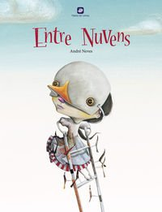
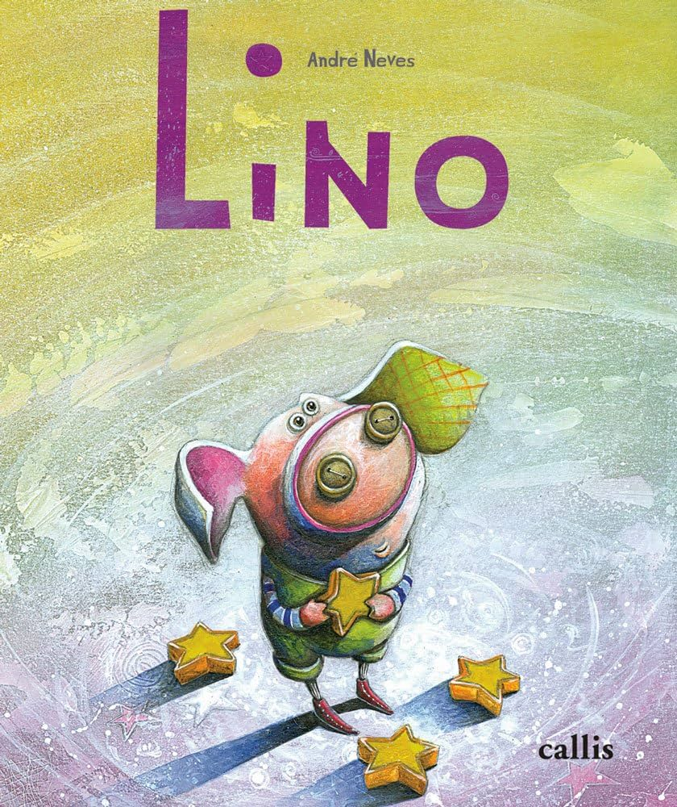
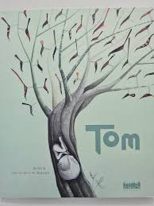

Obras
Entre Nuvens

Em Entre Nuvens, por meio de uma brincadeira com as palavras, o autor conta a história de uma menina que sonhava em ser um pássaro para poder ter uma nuvem só para ela. A pequena passa horas admirando o misterioso céu que a envolve, tentando desvendar o universo que tanto a intriga.
Nesse livro, André trata delicadamente da capacidade da menina de imaginar, de perguntar e de sonhar, ao mesmo tempo que faz uma crítica à ausência dessa sensibilidade nas pessoas que viviam ali e que têm muitas outras preocupações mais importantes do que “estar com a cabeça nas nuvens”.
Lino

A emocionante obra de André Neves fala sobre a amizade e a perda de uma forma muito terna, se valendo de uma linguagem delicada e um desfecho sensível e tocante. Mostra que o importante para Lino é saber que Lua estava feliz, mesmo estando longe dela e nos ensina muito sobre amizade. Nesse livro, as ilustrações também desempenham um papel tão importante quanto o texto.
Tom

Tom é um menino, que vive num mundo de silêncio contemplativo e cercado de pássaros. Nada daquilo que o cerca parece afetá-lo. Seu irmão, narrador da delicada fábula, observa Tom mergulhado no transe do seu mundo e não compreende, mas aos poucos esse irmão vai se aproximando do mundo de Tom e nos levando com ele.
Desenvolvedoras: Letícia, Gabriela, Priscila, Amanda e Fernanda.